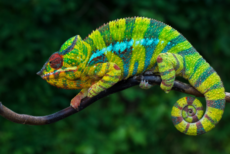
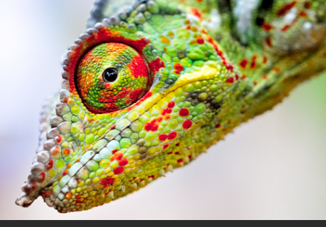
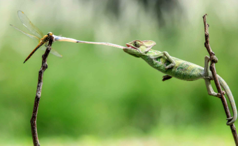

Le caméléon est un lézard qui vit surtout dans les arbres et qui a la faculté de changer de couleur
 Suivant son humeur ou la température ambiante, la caméléon change de couleur. Les yeux de caméléon sont étonnants.En meme temps, l'un regarde devant et l'autre derrière
Le caméléon attrape les insectes en projetant sa langue imbibée de matière gluante. Quand il mue, sa peau se détache en lambeaux.